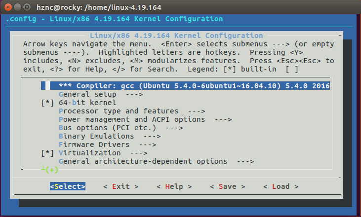

Linux kernel 内核更新
Linux内核（英语：Linux kernel），是一种开源的类Unix操作系统宏内核。
如果你在安装新硬件后遇到：网卡不能使用，亮度不能调节，触摸板不能识别，蓝牙不能使用等等，这些关系都和linux的内核有关系。Kernel 是 Linux 系统的核心，主要负责硬件的支持。Linux 内核提供了安全补丁，bugfix 和新特性。
内核信息
查看当前运行内核：
uname -r
4.4.0-124-genericLinux 内核版本号由 3 组数字组成：第一个组数字。第二组数字。第三组数字
第一个组数字：目前发布的内核主版本。
第二个组数字：偶数表示稳定版本；奇数表示开发中版本。
第三个组数字：错误修补的次数。
查看当前设备已安装的内核：
dpkg --get-selections| grep linux
libselinux1:amd64 install
linux-firmware install
linux-generic-lts-xenial install
linux-headers-4.4.0-124 install
linux-headers-4.4.0-124-generic install
linux-headers-generic-lts-xenial install
linux-image-4.4.0-116-generic deinstall
linux-image-4.4.0-119-generic deinstall
linux-image-4.4.0-121-generic deinstall
linux-image-4.4.0-124-generic install
linux-image-4.4.0-31-generic deinstall
linux-image-extra-4.4.0-116-generic deinstall
linux-image-extra-4.4.0-119-generic deinstall
linux-image-extra-4.4.0-121-generic deinstall
linux-image-extra-4.4.0-124-generic install
linux-image-extra-4.4.0-31-generic deinstall
linux-image-generic-lts-xenial install
linux-libc-dev:amd64 install
python-selinux install
selinux-policy-default install
selinux-utils install
util-linux install可以看到一台设备可以安装多个内核，但只能使用一个。
切换内核版本
一个系统可以同时安装多个内核，但是运行时只能选择一个，当启动电脑时，在显示 grub 菜单时可以选择加载哪一个内核。当只有一个系统安装时，grub 菜单可能被跳过，强制显示 grub 菜单可以在启动电脑时一直按住 Shift 按键。
安装内核
需要时可以自己手动更新系统内核，可以直接安装打包好的内核或自行从源码编译内核。
apt 安装
首先搜索可用内核：
apt-get update
apt-cache search linux-generic
在输出的结果中，找到合适的内核版本进行安装：
apt-get install linux-image-4.10.0-27-generic
清空下载的 deb 安装包文件，重启系统：
rm *.deb
sudo reboot
重启后查看内核版本：
uname -r
此方法一般无法安装最新版内核。
apt 卸载内核：
首先使用以上命令查看当前已安装的内核，然后卸载：
dpkg --get-selections| grep linux
sudo apt-get purge -f xxx
官方内核安装包
apt 方式安装的内核一般没有更新到最新，如果想要快速安装较新版本的内核可以去官网找到对应系统的内核安装包。以下里 Ubuntu 为例。
首先根据自己 Linux 系统版本，找到合适的可安装的最高版本内核：https://wiki.ubuntu.com/Kernel/Support
了解到需要安装的内核后，进入一下官方网站找到需要版本内核的目录进入：
https://kernel.ubuntu.com/~kernel-ppa/mainline/
下载对应版本的 deb 安装包：
wget https://kernel.ubuntu.com/~kernel-ppa/mainline/v5.3.11/linux-headers-5.3.11-050311_5.3.11-050311.201911121635_all.deb
wget https://kernel.ubuntu.com/~kernel-ppa/mainline/v5.3.11/linux-headers-5.3.11-050311-generic_5.3.11-050311.201911121635_amd64.deb
wget https://kernel.ubuntu.com/~kernel-ppa/mainline/v5.3.11/linux-image-unsigned-5.3.11-050311-generic_5.3.11-050311.201911121635_amd64.deb
wget https://kernel.ubuntu.com/~kernel-ppa/mainline/v5.3.11/linux-modules-5.3.11-050311-generic_5.3.11-050311.201911121635_amd64.deb
安装：
dpkg -i *.deb
如果安装过程报错，需要立刻卸载掉已安装的相关新内核部分：
dpkg --get-selections| grep linux
sudo apt-get purge -f xxx
如果安装顺利完成，重启系统：
reboot
查看内核版本：
uname -r
源码编译内核
如果你的动手能力较强，或者需要内核支持某些特性但是默认安装的内核不包含对应模块，可以源码编译内核并安装。
kernel 官网：https://www.kernel.org/

以上官网列出的多个版本内核代表意义不同：
5.3.11 是最新的稳定版
4.19.84 是最新的 LTS 版本
4.14.154、4.9.202、以及 4.4.202 是仍然处于维护状态的老的 LTS 版本
建议使用的内核的分级，从最佳的方案到最差的方案如下：
- 你最喜欢的 Linux 发行版支持的内核
- 最新的稳定版
- 最新的 LTS （长期支持）版本
- 仍然处于维护状态的老的 LTS 版本
绝对不要去使用的内核：
- 不再维护的内核版本
官网首页有各个版本内核的下载站链接，点击 tarball 可以直接下载源码包。
如果你要下载的内核版本过老或者没有在列表中，可以到镜像网站：https://mirrors.edge.kernel.org/pub/linux/kernel/ 去找找。
首先查看当前系统安装的内核版本：
$uname -r
4.15.0-29-generic
安装编译内核需要的依赖：
sudo apt-get install git fakeroot build-essential ncurses-dev xz-utils libssl-dev bc flex libelf-dev bison
下载内核压缩包到本地任意目录，解压后容量较大，请注意存储空间是否足够：
cd /home
wget https://cdn.kernel.org/pub/linux/kernel/v4.x/linux-4.19.164.tar.xz
tar xvf linux-4.19.164.tar.xz
cd linux-4.19.164
编译内核前，我们需要提前知道需要启用那些模块，选择了错误的或者少选择某些模块可能导致系统无法正常运行。一个简单的方式是拷贝当前内核的配置文件来作为基础再进行进一步修改，这样比较安全。当前内核的配置文件是在 /boot 目录下的 config 开头的文件，复制到内核源码目录并重命名为 .config：
cp /boot/config-$(uname -r) .config
通过 make menuconfig 打开图形化配置界面，这样更加清晰简单的设置需要启动的内核模块：
make menuconfig

使用上下左右切换菜单，带箭头的项 ---> 表示含有子菜单，通过 enter 进入。
想要启用的模块点击 y 启用，想要关闭的模块点击 n 取消选中。
设置完成后，切换到 save 项保存设置到 .config 文件然后 exit。
下面开始编译内核，可以设置使用多个核心来加快速度：
make -j 4
编译用时较长，需要耐心等待。
完成后安装内核模块，会将相关内核模块安装到/lib/modules目录下：
make modules_install
最后安装内核：
make install
安装完成后在 /boot/ 目录下可以看到新内核对应的相关文件。
查看 grub 配置文件：/boot/grub/grub.conf，理论上已经添加新安装的内核到启动项中，按顺序排列在最前面：
default 项定义启动哪一个内核，0 表示排在最前面的 1 表示第二个，默认启动的内核还是之前的内核，修改 default=0 默认启动新内核。
重启系统测试，如果没有修改 grub 的默认启动内核，启动时按住 shift 键打开启动项菜单，选择性内核启动系统即可。
查看内核版本：
uname -r
以上就是编译内核的简单过程。
标签：kernel